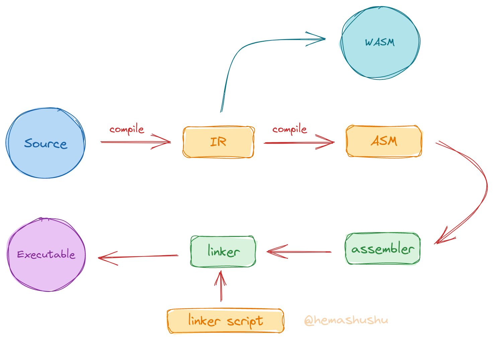

Making your own tools and building modern computer system from scratch, step by step - Index
This is the index for the series of articles Making your own tools and building modern computer system from scratch, step by step.
In the previous article Introduction, it was mentioned that this series consist of four sub-series, each containing several parts. The following are the titles of each part and links to the completed articles. This index will also be updated with new articles.
The first series covers fundamental knowledge, which may not be as exciting as the other three series. but it’s recommended not to skip. The field of modern computer technology is vast and complex, with various frameworks and tools constantly emerging. The iteration speed is so fast that it can easily overwhelm us. However, if you study towards the underlying technology, you will find that things become simple and straightforward. After reaching the destination, looking back at the fancy surface technology will become clear and simple. The first series will give you an accurate understanding of system technology.
Maybe you have seen the fractal graphics of the Mandelbrot set, which can be infinitely zoomed in and moved and always produce a variety of beautiful patterns. You can browse it like exploring the galaxies of our universe, and even spending a whole day on it will not be boring. But it’s unbelievable that this vast and complex universe is generated by a simple mathematical function: \(y = x^2 + z\), just keep substituing the value of \(y\) into \(x\), and the big bang happens.
Series 1: Dive into RISC-V system, step by step
-
Part I: Understanding the usage of compiler, linker, debugger and some common binary tools, understanding the organization of program, building minimal freestanding (also called bare metal programs) executable programs.
-
Part II: A brief look at the principles of interaction between software and hardware through microcontroller (MCU). Writing bare-metal program (firmware) without SDK or HAL (hardware abstraction library), directly reading and writing registers, controlling the electrical signal of input and output pin (GPIO), implementing serial communications.
-
Part III: Understanding the principles of program loading, dynamic linking in modern systems, understanding the function call conventions of RISC-V and the basic instructions, writing simple programs in assembly language.
-
Part IV: Design an assembly language with a target architecture of RISC-V, implement its assembler and syntax parser.
-
Part V: Designing a functional linker script language and implementing a script interpreter.
Series 2: Implementing a modern language and compiler, step by step
-
Part I: Designing an IR (intermediate language) and implementing a code generator from IR to assembly language.
-
Part II: Designing a modern statically typed language, implementing a code generator from high-level language to IR, now you have a simple but complete compilation system.
-
Part III: Implement the WASM virtual machine (VM) and then implement the code generator for the IR to WASM. With the WASM VM you can get a basic idea of how a processor works, while having the WASM code generator means that the language can run in a browser.
-
Part IV: Implementing the IR to the ARM and RISC-V assembly code generator.
-
Part V: Implementing the IR to the LLVM IR code generator.
-
Part VI: Implementing the project construction tool and package manager.

Series 3: Implementing a functional RISC-V CPU, step by step
-
Part I: Designing a minimal instruction set that enables numeric accumulation and memory loading and storing, implement a minimal processor with digital circuit simulation software that contains the basic processor elements, such as ROM, RAM, register file, decoder, controller and ALU (arithmetic logic unit), which can execute the instruction set.
-
Part II: Deriving an HDL language from the language, implement a digital circuit simulator and a test framework, implement a code generator from this HDL to SystemVerilog. Re-implement the previous processor with the HDL and download it to the FPGA hardware for power-on testing.
-
Part III: Implementing a multi-cycle RV64I processor using the HDL language and download it to the FPGA hardware for power-on testing.
-
Part IV: Implementing some common protocols (e.g. UART, \(I^2C\), SPI), write drivers for common peripherals (e.g. GPIO, SPI Flash, SD card, SSD 1306 display etc.). Integrating into the processor to achieve a complete hardware system.
-
Part V: Upgrade the microarchitecture of the processor to a multi-stage pipeline design.
Series 4: Implementing a functional microkernel OS, step by step
-
Part I: Adding a MMU (memory management unit) to the processor, as well as a privileged module.
-
Part II: Implementing the minimal kernel, i.e. implementing basic serial text sending and receiving, page table memory management, program loader, process switch and message mechanisms.
-
Part III: Implementing a simple file system.
-
Part IV: Implementing a simple Shell.
-
Part V: Implementing a simple network interface.
-
Part VI: Implementing a package manager.
-
Part VII: Adding a floating point module to the processor, and a matrix algorithm coprocessor.
-
Part VIII: implementing a simple machine learning library and then implementing a handwritten number recognition program.
-
Part IX: Implementing a simple graphics acceleration coprocessor.
-
Part X: Implementing a simple graphics library and physics engine, and make a retro action game.